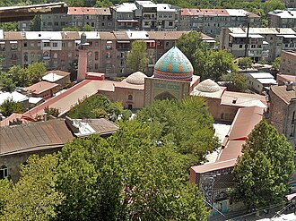

소개
La mosquée bleue Gök Jami est une mosquée iranienne basée à Erevan en Arménie.
المسجد الأزرق هو مسجد شيعي فارسي بُني في القرن الثامن عشر، يقع في عاصمة أرمينيا، يريفا. وقد بُني في منتصف القرن التاسع عشر خلال فترة الحكم الصفوي في زمن نادر شاه، وخلال الحقبة السوفياتية توقف المسجد عن العمل بشكل كامل وتحول إلى متحف للتاريخ في يريفان. وبعد استقلال أرمينيا عن الاتحاد السوفيتي، تم تجديد المسجد بدعم من الحكومة الإيرانية وبدأت نشاطات العمل في المسجد. وهو حاليا المسجد النشط الوحيد في أرمينيا.
The Blue Mosque is an 18th-century Iranian Twelver Shia mosque, located in Yerevan, Armenia. It was commissioned by Hoseyn Ali Khan, the khan of the Erivan Khanate. It is one of the oldest extant structures in central Yerevan and the most significant structure from the city's Iranian period. It was the largest of the eight mosques of Yerevan in the 19th century and is the only active mosque in Armenia today.
Gök Camii Ermenistan'ın başkenti Erivan'da bulunan bir Azeri camiidir.
Masjid Biru adalah masjid Syi'ah peninggalan abad ke-18 yang berada di Yerevan, Armenia. Selama pemerintahan Uni Soviet, aktivitas keagamaan di masjid ini dinonaktifkan dan masjid ini berfungsi sebagai museum. Setelah kemerdekaan Armenia, masjid ini direnovasi dengan dukungan pemerintah Iran dan aktivitas keagamaan pun kembali diselenggarakan. Masjid ini merupakan satu-satunya masjid yang masih berfungsi di Armenia.
مسجد کبود ایک شیعہ فارسی مسجد ہے جو اٹھارویں صدی میں تعمیر کی گئی۔
Die Blaue Moschee ist eine Mitte des 18. Jahrhunderts erbaute schiitische Moschee in Jerewan. Sie ist die einzige derzeit genutzte Moschee Armeniens.
La Moschea Blu è una moschea di Erevan, l'unica ad essere attiva in territorio armeno.
De Blauwe Moskee is een moskee in het district Kentron van de Armeense hoofdstad Jerevan, gelegen aan de Mesrop Masjtotslaan.
카푸이트 모스크(아르메니아어: Կապույտ մզկիթ→푸른 모스크)는 아르메니아 예레반에 위치한 18세기 시아 모스크이다. 소련 통치 시기 에는 모스크가 아닌 아르메니아 역사박물관으로 사용되었다. 아르메니아의 독립 후, 모스크는 이란 정부의 도움을 받아 재건되었으며 다시 모크스의 기능으로 사용되고 있다. 이 모스크는 아르메니아에서 현재 모스크로 사용되는 유일한 모스크이다.
Голубая мечеть — соборная мечеть Еревана, современный адрес — проспект Месропа Маштоца, д. 12. Построена в 1765—1766 годах.
มัสยิดสีน้ำเงิน เป็นมัสยิดนิกายชีอะฮ์ในเยเรวาน ประเทศอาร์มีเนีย สร้างขึ้นในศตวรรษที่ 18 ถือเป็นสิ่งก่อสร้างสำคัญจากยุคอาร์มีเนียใต้ปกครองของอิหร่าน ปัจจุบันมัสยิดสีน้ำเงินเป็นมัสยิดแห่งเดียวในประเทศอาร์มีเนียที่ยังคงมีการใช้งานในฐานะศาสนสถานอยู่ โดยประเทศอาร์มีเนียมีประชากรมุสลิมอยู่เป็นส่วนน้อย ราว 812 ถึง 1,000 คน หรือคิดเป็น 0.03% ของประชากร ในปี 2013 รัฐมนตรีกระทรวงวัฒนธรรมของอาร์มีเนียแถลงระบุว่ามีความพยายามอย่างมากที่จะเสนอชื่อให้มัสยิดสีน้ำเงินได้รับการขึ้นทะเบียนเป็นแหล่งมรดกโลกของยูเนสโก
Blå moskén, också känd som Gyok Jami, är en moské i Armeniens huvudstad Jerevan. Den byggdes 1766 under Hussein Ali, Jerevans dåvarande khan.
지도에서
자료와 링크
- Wikipédia — Français
- Wikipédia — العربية
- Wikipédia — English
- Wikipédia — Türkçe
- Wikipédia — Bahasa Indonesia
- Wikipédia — اردو
- Wikipédia — Deutsch
- Wikipédia — Español
- Wikipédia — Italiano
- Wikipédia — Português
- Wikipédia — Nederlands
- Wikipédia — 한국어
- Wikipédia — Русский
- Wikipédia — ไทย
- Wikipédia — Svenska
- Wikidata — Q1979112
데이터: 위키데이터(CC0), 3개월마다 갱신. 연도는 그 건물에 대해 알려진 가장 이른 건립 연대입니다. 나중에 모스크가 된 건물(아야 소피아 등)의 경우 원래 건물의 연대입니다. 사진: 위키미디어 공용, 작가와 라이선스는 각 사진의 페이지에 있습니다.